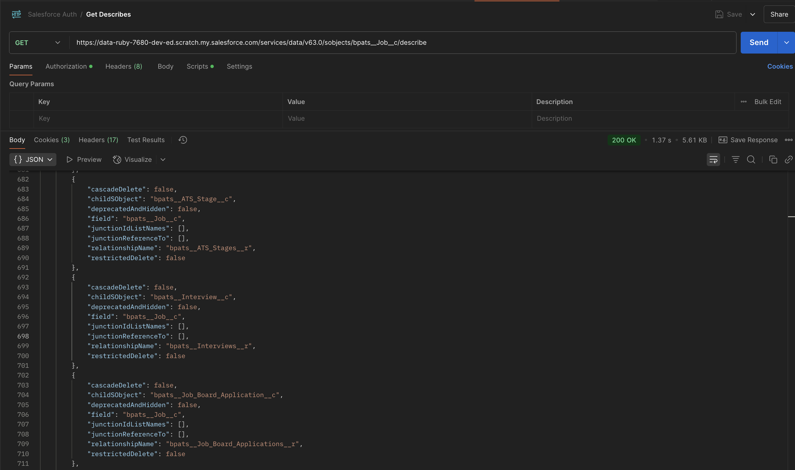

ATS External Integration Guide
Introduction
This reference guide provides general information about each
Applicant Tracking System (ATS) and specific information about
each API operation and supported object type. This document
provides an overview of how external systems can integrate with
our ATS. It includes methods for establishing connections,
retrieving job listings, and submitting job applications through
various integration points.
Objects
In the ATS, the term object refers to a specific type of record
used within the system. Examples of these objects include Job,
Contact, Placement etc. Each object represents a fundamental
concept in ATS, helping to structure how staffing data is
stored, managed, and processed according to the system’s rules
and logic.
Objects:
| Object Name | Object API Name |
|---|---|
| Account | Account |
| ATS Action | bpats__ATS_Action__c |
| ATS Action Link | bpats__ATS_Action_Link__c |
| ATS Applicant | bpats__ATS_Applicant__c |
| ATS Log | bpats__ATS_Log__c |
| ATS Stage | bpats__ATS_Stage__c |
| ATS Stage Tracking | bpats__ATS_Stage_Tracking__c |
| ATS Template | bpats__ATS_Template__c |
| ATS Template Filter | bpats__ATS_Template_Filter__c |
| ATS Template Stage | bpats__ATS_Template_Stage__c |
| ATS Timeline Configuration | bpats__ATS_Timeline_Configuration__c |
| ATS Timeline Child | bpats__ATS_Timeline_Child__c |
| Branch | bpats__Branch__c |
| Contact | Contact |
| Contact List | bpats__Contact_List__c |
| Content Version | ContentVersion |
| Email Message | EmailMessage |
| Interview | bpats__Interview__c |
| Interview Feedback | bpats__Interview_Feedback__c |
| Interview Template | bpats__Interview_Template__c |
| Interview Template Detail | bpats__Interview_Template_Detail__c |
| Interview Topic | bpats__Interview_Topic__c |
| Interview Topic Feedback | bpats__Interview_Topic_Feedback__c |
| Job | bpats__Job__c |
| Job Board Application | bpats__Job_Board_Application__c |
| Message Stats | bpats__Message_Stats__c |
| Offer | bpats__Offer__c |
| Placement | bpats__Placement__c |
| Placement Credit | bpats__Placement_Credit__c |
| Placement Credit Template | bpats__Placement_Credit_Template__c |
| Placement Credit Template Entry | bpats__Placement_Credit_Template_Entry__c |
| Purchase Order | bpats__Purchase_Order__c |
| Work Site Location | bpats__Work_Site_Location__c |
Please follow the link to view the complete data schema of ATS.
The external system can get the object by using the salesforce standard API.
Endpoint:
https://<your-instance>.salesforce.com/services/data/vXX.0/sobjects/<your-object-api-name>/describe

Note:
Before accessing objects through the API, make sure the external system is properly authenticated with your Salesforce org.
JSON
JSON (JavaScript Object Notation) is a lightweight, text-based data format used for storing and exchanging data between systems—especially in web applications. It is easy for humans to read and write, and easy for machines to parse and generate.
Salesforce Versions appendix
In the below examples replace the ‘vXX.0’ placeholder for the version of the Salesforce API you want to use — for example:
- v59.0 = Spring '24 release
- v60.0 = Summer '24 release
- v61.0 = Winter '25 release
Use the latest version your org supports to:
- Access the latest features and field types
- Avoid deprecated functionality
- Improve compatibility with newer Salesforce objects or APIs
API Information
Base URL:
https://<your-instance>.salesforce.com/services/data/vXX.0/sobjects/<your-object-api-name>/describe
- Replace
with your Salesforce domain. - Replace vXX.0 with your Salesforce API version (e.g., v60.0 for Spring '24).
Access Token can be obtained
HTTP Method: POST
To authenticate with Salesforce and obtain an access token for API usage, you can use the OAuth 2.0 Password Grant flow. This method is suitable for server-to-server integrations where the credentials are securely stored.
Token Request Endpoint:
https://login.salesforce.com/services/oauth2/token
Required Parameters
| Parameter | Description |
|---|---|
| grant_type | Must be password <password> |
| client_id | Consumer Key from your Connected App |
| client_secret | Consumer Secret from your Connected App |
| username | Salesforce user's username |
| password | Concatenation of user's password and security token (e.g., password123SECURITYTOKEN) |
Example Request:
https://login.salesforce.com/services/oauth2/token?grant_type=password&client_id=YOUR_CLIENT_ID&client_secret=YOUR_C LIENT_SECRET&username=YOUR_USERNAME&password=YOUR_PASSWORD_AND_SECURITY_TOKEN
Successful Response:
JavaScript
{
"access_token": "YOUR_ACCESS_TOKEN",
"instance_url": "https://yourInstance.salesforce.com",
"id": "https://login.salesforce.com/id/ORG_ID/USER_ID",
"token_type": "Bearer",
"issued_at": "TIMESTAMP",
"signature": "SIGNATURE"
}
Common Request Headers
| Header | Type | Required | Example | Description |
|---|---|---|---|---|
| Authorization | String | Yes | Bearer <Access_Token> | OAuth 2.0 Bearer Token |
| Content-Type | String | Yes | application/json | JSON body expected |
| Accept | String | Yes | */* | Expected response content type |
Request Parameters:
| Parameter Location | Name | Type | Required | Example | Description |
|---|---|---|---|---|---|
| Query (URL) | q (for SOQL query) | String | Yes (for query endpoint) | SELECT Name FROM bpats__Job__c | SOQL statement for record fetching |
| Path | Object_API_Name | String | Yes | bpats__Job__c | The Salesforce API name of the object you're targeting |
| Path | recordId | String (18-char Salesforce ID) | Yes (for single record updates/deletes) | a01ABC1234xyz123 | Unique ID of the record |
Request Body (Payload)
The POST, PUT and PATCH requests can have the request body (payload), such as JSON or XML data. In Swagger terms, the request body is called a body parameter. There can be only one body parameter, although the operation may have other parameters (path, query, header).
For POST, PATCH, and Composite endpoints:
- Format: application/json
- Structure: JSON object
- Field Validation Rules:
| Field Property | Rule |
|---|---|
| Data Types | tring, Number, Boolean, Array (for composite bulk ops) |
| Maximum Length | CDepends on field metadata in Salesforce (commonly 255 characters for text fields) |
| Required Fields | Must be filled if Salesforce marks them as Required in Object Schema |
| Optional Fields | Can be omitted if not mandatory |
| Lookup Fields | Provide 18-digit Salesforce Record ID for references |
Status Codes and Error Responses
HTTP response status codes indicate whether a specific HTTP request has been successfully completed.
| HTTP response code | Description |
|---|---|
| 200 | “OK” success code, for GET, HEAD, and some PATCH requests. |
| 201 | “Created” success code, for POST requests and some PATCH requests. |
| 204 | “No Content” success code, for DELETE requests and some PATCH requests. |
| 300 | The value returned when an external ID exists in more than one record. The response body contains the list of matching records. |
| 304 | The request content hasn’t changed since a specified date and time. The date and time is provided in a If-Modified-Since header. See Get Object Metatdata Changes for an example. |
| 400 | The request couldn’t be understood, usually because the JSON or XML body contains an error. |
| 401 | The session ID or OAuth token used has expired or is invalid. The response body contains the message and errorCode. |
| 403 | The request has been refused. Verify that the logged-in user has appropriate permissions. If the error code is REQUEST_LIMIT_EXCEEDED, you’ve exceeded API request limits in your org. |
| 404 | The requested resource couldn’t be found. Check the URI for errors, and verify that there are no sharing issues. |
| 405 | The method specified in the Request-Line isn’t allowed for the resource specified in the URI. |
| 409 | The request couldn’t be completed due to a conflict with the current state of the resource. Check that the API version is compatible with the resource you’re requesting. |
| 410 | The requested resource has been retired or removed. Delete or update any references to the resource. |
| 412 | The request wasn’t executed because one or more of the preconditions that the client specified in the request headers wasn’t satisfied. For example, the request includes an If-Unmodified-Since header, but the data was modified after the specified date. |
| 414 | The length of the URI exceeds the 16,384-byte limit. |
| 415 | The entity in the request is in a format that’s not supported by the specified method. |
| 420 | Salesforce Edge doesn’t have routing information available for this request host. Contact Salesforce Customer Support. |
| 428 | The request wasn’t executed because it wasn’t conditional. Add one of the Conditional Request Headers, such as If-Match, to the request and resubmit it. |
| 431 | The combined length of the URI and headers exceeds the 16,384-byte limit. |
| 500 | An error has occurred within Lightning Platform, so the request couldn’t be completed. Contact Salesforce Customer Support. |
| 502 | Salesforce Edge wasn’t able to communicate successfully with the Salesforce instance. |
| 503 | The server is unavailable to handle the request. Typically this issue occurs if the server is down for maintenance or is overloaded. |
Response Body Schemas
For successful responses:
| Field | Type | Description |
|---|---|---|
| ID (for POST) | String | The Salesforce ID of the created record. |
| success (for POST/Composite) | Boolean | Indicates if the operation was successful. |
| errors (for POST/Composite) | Array | List of errors, if any. |
| records (for Query) | Array | Array of records matching query criteria. |
Authentication
Authentication in REST APIs is the process of verifying the identity of a client making a request.
It's essential to ensure that only authorized users or systems can access specific resources.
Our ATS is built on Salesforce, which supports secure and scalable integrations via Connected Apps.
Authentication ensures secure communication and helps enforce access control in RESTful services.
Method: Connected App in Salesforce
To connect an external system:
- Create a Connected App in Salesforce:
- Go to Setup > App Manager > New Connected App.
- Define the app name and enable OAuth Settings.
- Generate Client Credentials (Client ID and Client Secret).
- Authenticate using Salesforce OAuth 2.0 flow.
- Use the access token to call Salesforce REST APIs to read/write data.
Security Note:
API interactions are performed under the context of the authenticated user. This means access to data and functionality is governed by that user's assigned permissions.
Tip:
Ensure the external system supports OAuth 2.0 and is configured to handle Salesforce-style authentication tokens.